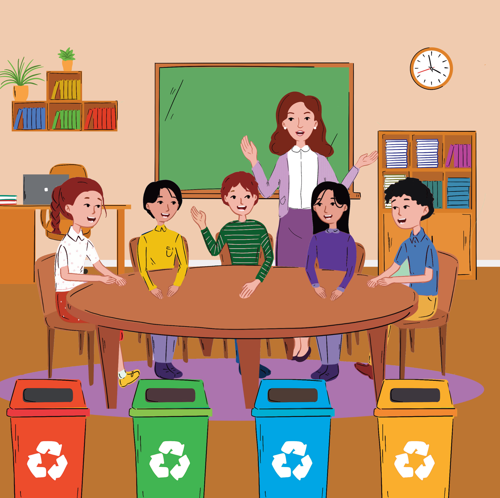

Mjedisi i vendit tim
Si riciklohen mbetjet?
Malit i kishin rënë në sy vazhdimisht disa shenja në shportën e plehrave në oborrin e shkollës. Madje kishte dëgjuar dhe për rregullën “3R - ripërdor, riciklo dhe redukto”.
Ndoshta se nuk ishte shumë i interesuar atëkohë, prandaj nuk e kishte kuptuar dhe aq mirë këtë rregull. Kur mësuesja filloi të fliste se si mbeturinat nuk duhej të hidheshin të gjitha në të njëjtën shportë, por ato duhej të klasifikoheshin, atij iu kujtua pse ekzistonte rregulla “3R”.
Qëllimi i kësaj rregulle ishte që të shfrytëzoheshin sa më shumë produktet. - Mësuese, a po flisni për riciklimin? - pyeti Mali. - Pikërisht, Mali, të lumtë! Mirëpo, po flas dhe për ripërdorimin dhe reduktimin. P.sh., ti mund të përdorësh çantën e njëjtë për shumë vjet në shkollë. Mund të punosh ndonjë dekor dhe ta zbukurosh çdo vit çantën, në vend që të kërkosh të blesh një të re. Apo, t’i falësh lodrat e tua. Kështu, ne kemi ripërdorur materiale të ndryshme.
Ju lutem, kudo që e shihni shenjën e riciklimit, të hidhni vetëm materialet që mund të riciklohen, si: shishet e plastikës, letrën e pastër, shishet e xhamit apo kanaçet e pijeve të ndryshme.
Ju duhet të ndani mbeturinat edhe në shtëpitë tuaja. Rrobat apo gjërat që mund të riciklohen, t’i përdorni sa më gjatë që të mundeni. Kur të mos ju bëjnë më, mund t’ua dhuroni njerëzve në nevojë.
Mali dhe shokët e shoqet të klasës u gëzuan shumë, sepse menduan që kishin shumë gjëra në dorë për të ruajtur ambientin. Mezi po prisnin që të sistemonin lodrat e vegjëlisë e rrobat e tyre, me qëllim që t’ua dhuronin fëmijëve të tjerë.
Mali propozoi që të gjithë fëmijët të vizatonin simbolin e riciklimit dhe ta vendosnin atë në një prej shportave të mbeturinave në shtëpi.
